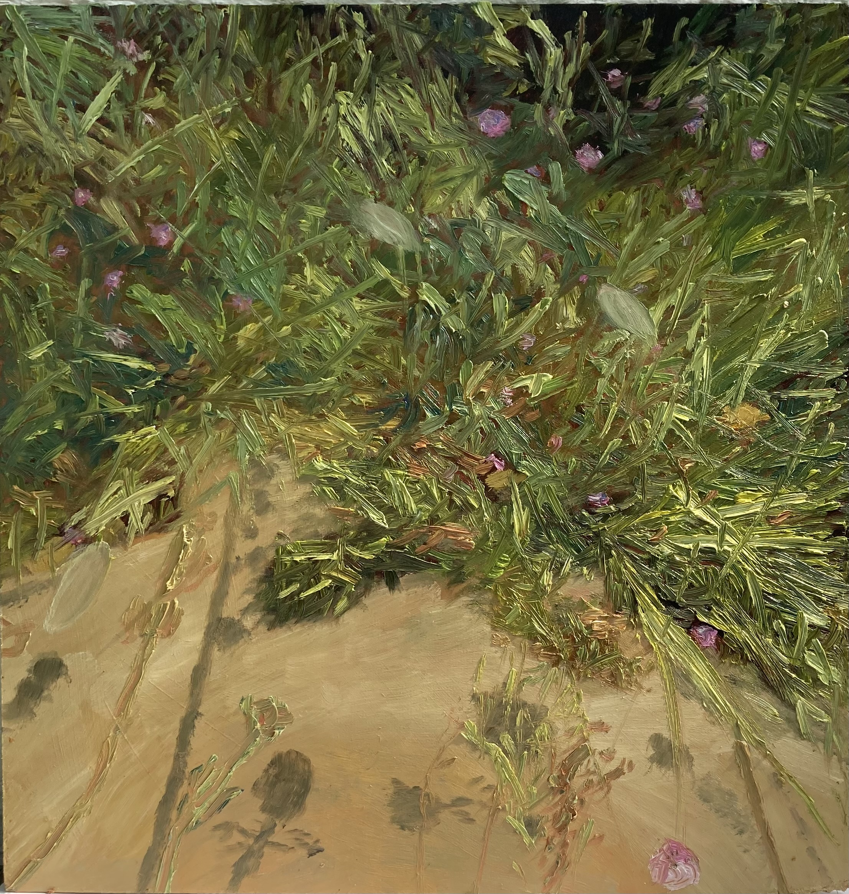

C:\PORTFOLIO\WORK.LST
WIM_NELEN — PAINTINGS
Wim Nelen is a Belgian painter exploring the intersection of nature and human experience.

FEATURED — Sand Dunes Frontier, oil on board, 2024
Wim Nelen is a Belgian painter exploring the intersection of nature and human experience.
